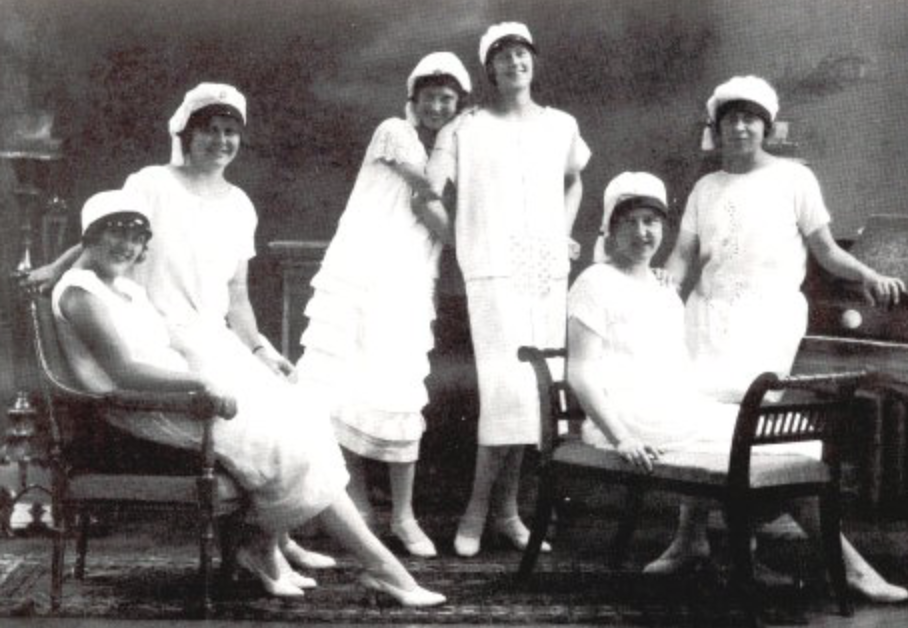
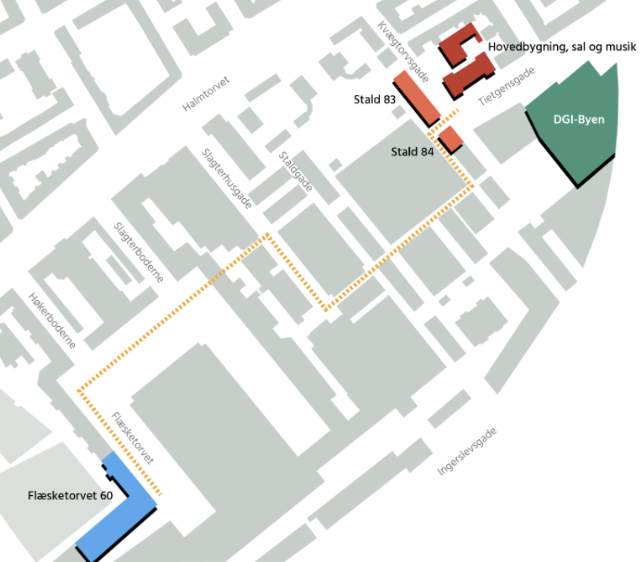

Rysensteens history
The school was founded in 1881, under the name of "Laura Englehardt’s Skole". The school was situated in Ny Vestersgade(until 1932) which is only a few kilometers of where the school is now. Rysensteen Highschool was also only a girl’s school until 1958.
Since 2001 the school was getting popular and bigger and bigger. In 2011 they didn’t have enough place for all the pupils in the main building, so they rented classrooms in the building called “Flæsketorvet” which is situated 7 minutes away from the main building. They own now the first 3 floors and the “stalderne”, which are old stables were we have our science classes. When we have sport we have to go to a big sports center, which also is 2 minutes away from our main building.
Here is a map of the school; “Stald” is our science classes. “DGI-Byen” is the sport center ‘’Flæsketorvet” is our second building. “Hovedbygning” is our main building.
